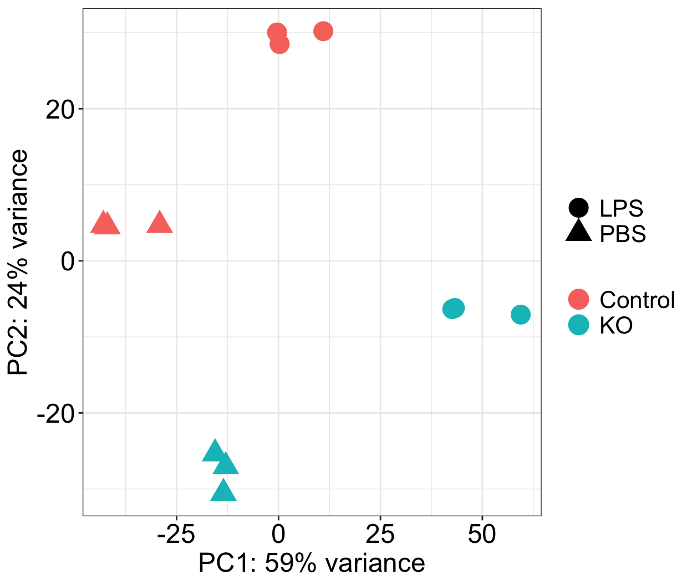
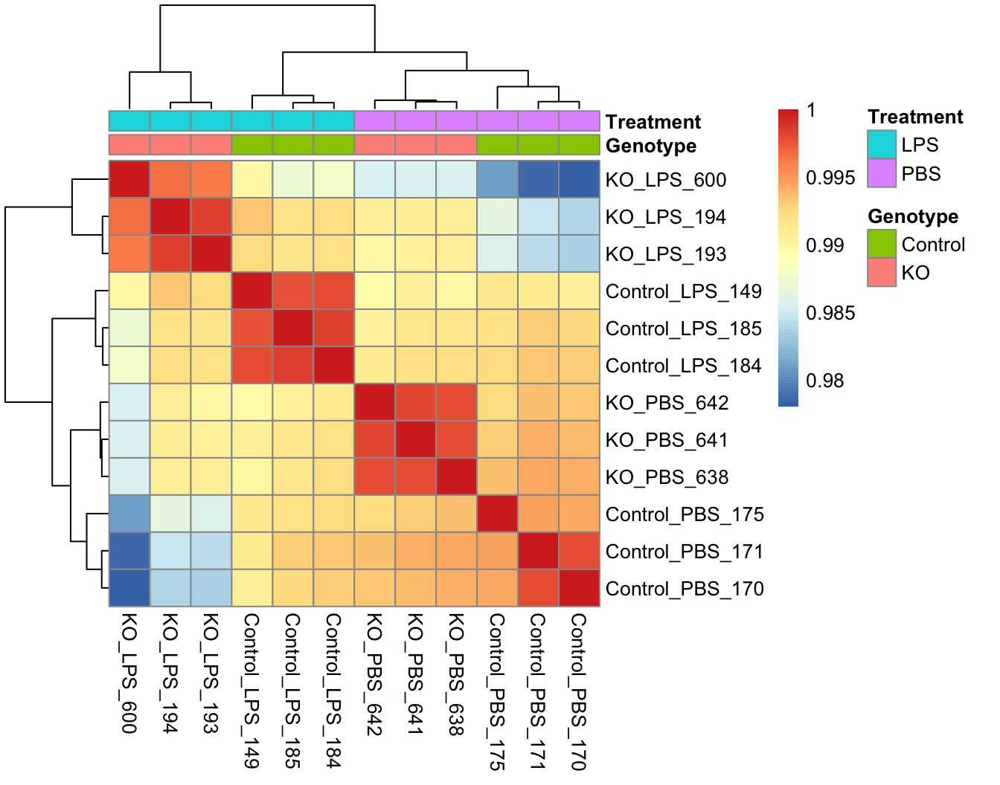

Chapter 3 Normalization and Quality control
3.1 Normalization
The next step is to normalize the count data in order to be able to make fair gene comparisons between samples.
To perform the median of ratios method of normalization1, DESeq2 has a single estimateSizeFactors() function that will generate size factors for us. We will use the function in the example below, but in a typical RNA-seq analysis this step is automatically performed by the DESeq() function, which we will see later.
Perform normalization:
We can take a look at the normalization factor applied to each sample:
## KO_PBS_642 KO_PBS_641 KO_PBS_638 KO_LPS_600 KO_LPS_194 KO_LPS_193 Control_PBS_175 Control_PBS_171 Control_PBS_170 Control_LPS_185
## 1.2295376 0.7077297 1.1883411 0.9626383 0.7803893 1.1168247 1.3162828 1.0183880 1.0247178 0.9783637
## Control_LPS_184 Control_LPS_149
## 1.0500173 0.9531096Now, to retrieve the normalized counts matrix from dds, use the counts() function and add the argument normalized=TRUE.
These normalized counts are useful for the QC and visualization purposes, but the step with estimateSizeFactors() is done automatically by DESeq2 during differential expression analysis.
3.2 Quality control
Next, we perform QC checks on the count data to help us ensure that the samples/replicates look good.
To explore the similarity of our samples, we will be performing sample-level QC using Principal Component Analysis (PCA) and hierarchical clustering methods.
When using these unsupervised clustering methods, transformation of the normalized counts may improve the distances/clustering for visualization. First, let’s try the most simple method of log2 transformation and plot counts of the two first KO_PBS replicates as a scatter plot:
nts <- log2(assay(dds, normalized = TRUE)+1)
ggplot(as.data.frame(nts), aes(x = KO_PBS_642, y = KO_PBS_641)) +
geom_point()+
ggtitle('log2(x+1) transformation')+
theme_dose(16)Above you can see a nice example of heteroscedasticity in the data, illustrating the dependence of the variance on the mean count value. Instead, DESeq2 uses a regularized log transform (rlog) of the normalized counts for sample-level QC as it moderates the variance across the mean, improving the clustering.
Perform rlog-transformation:
And this is how data looks like after rlog transformation:
ggplot(as.data.frame(assay(rld)), aes(x = KO_PBS_642, y = KO_PBS_641)) +
geom_point()+
ggtitle('rlog transformation')+
theme_dose(16)3.2.1 Principal Component Analysis (PCA)
PCA is a technique used to emphasize variation and bring out strong patterns in a dataset (dimensionality reduction).
We would expect that biological replicates cluster together on PC1 and/or PC2, and the samples from different treatment groups cluster separately.
DESeq2 has a built-in function for plotting PCA plots, that uses ggplot2. It takes the rlog object as an input directly.
The function plotPCA requires two arguments as input: an rlog object and the intgroup (the column in our metadata that we are interested in).
Below we will create a custom function to plot PCA:
plotPCA.mystyle <- function (object, ntop = 500, returnData = FALSE)
{
font.size <- 18
rv <- rowVars(assay(object))
r <- assay(object)
select <- order(rv, decreasing = TRUE)[seq_len(min(ntop,
length(rv)))]
pca <- prcomp(t(assay(object)[select, ]))
percentVar <- pca$sdev^2/sum(pca$sdev^2)
d1 <- data.frame(PC1 = pca$x[, 1], PC2 = pca$x[, 2],
Genotype = meta$Genotype,
Treatment = meta$Treatment,
name = colnames(object))
ggplot(data = d1, aes_string(x = "PC1", y = "PC2")) +
geom_point(aes_string(color = "Genotype", shape = "Treatment"), size = 6) +
xlab(paste0("PC1: ", round(percentVar[1] * 100), "% variance")) +
ylab(paste0("PC2: ", round(percentVar[2] * 100), "% variance")) +
theme_dose(font.size = font.size)+ #+ geom_label_repel(aes(label = colnames(data)), label.size = 0.1, box.padding = 0.2)
theme(
legend.key = element_rect(colour = NA, fill = NA),
legend.title= element_blank(),
legend.text=element_text(size=font.size-2)
)
} Plot PCA graph:

By default the function plotPCA.custom uses the top 500 most variable genes. You can change this by adding the ntop argument and specifying how many genes you want to use to draw the plot.
Task 1: In the example above, we just plotted the graph for PC1 and PC2 values. Please change the function plotPCA.mystyle so it can produce score plots for PC1 and PC3. Also, provide an obtained plot and a brief explanation of it. (1 point).
3.2.2 Correlation Heatmap
The heatmap displays the correlation of gene expression for all pairwise combinations of samples in the dataset. Since the majority of genes are not differentially expressed, samples generally have high correlations with each other (values higher than 0.80). Samples below 0.80 may indicate an outlier in your data and/or sample contamination.
Extract the rlog matrix from the object:
Since there is no built-in function for heatmaps in DESeq2 we will be using the pheatmap() function from the pheatmap package. This function requires a matrix/dataframe of numeric values as input, and so the first thing we need to is retrieve that information from the rld object:
Then we need to compute the pairwise correlation values for samples. We can do this using the cor() function:
Plot the correlation values as a heatmap:

If you forgot how this method works you may check the lecture slides or watch this video: ↩︎